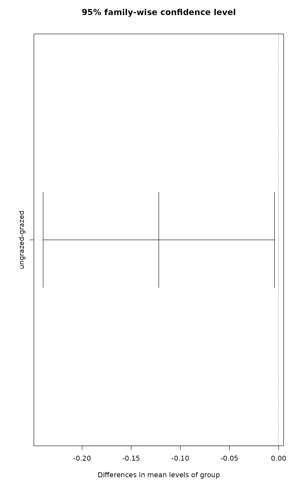
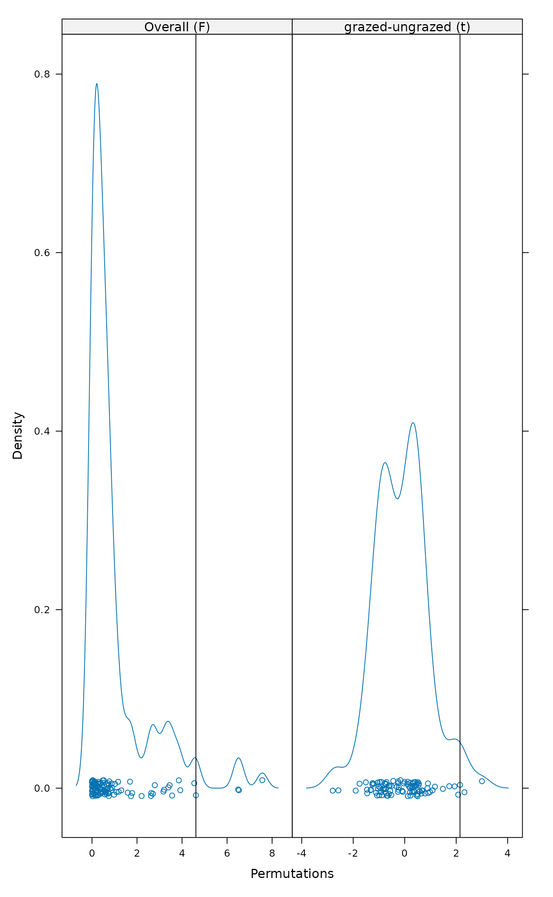

Permutation test of multivariate homogeneity of groups dispersions (variances)
permutest.betadisper.RdImplements a permutation-based test of multivariate homogeneity of
group dispersions (variances) for the results of a call to
betadisper.
# S3 method for betadisper permutest(x, pairwise = FALSE, permutations = 999, parallel = getOption("mc.cores"), ...)
Arguments
| x | an object of class |
|---|---|
| pairwise | logical; perform pairwise comparisons of group means? |
| permutations | a list of control values for the permutations
as returned by the function |
| parallel | Number of parallel processes or a predefined socket
cluster. With |
| ... | Arguments passed to other methods. |
Details
To test if one or more groups is more variable than the others, ANOVA
of the distances to group centroids can be performed and parametric
theory used to interpret the significance of F. An alternative is to
use a permutation test. permutest.betadisper permutes model
residuals to generate a permutation distribution of F under the Null
hypothesis of no difference in dispersion between groups.
Pairwise comparisons of group mean dispersions can be performed by
setting argument pairwise to TRUE. A classical t test
is performed on the pairwise group dispersions. This is combined with a
permutation test based on the t statistic calculated on pairwise group
dispersions. An alternative to the classical comparison of group
dispersions, is to calculate Tukey's Honest Significant Differences
between groups, via TukeyHSD.betadisper.
Value
permutest.betadisper returns a list of class
"permutest.betadisper" with the following components:
the ANOVA table which is an object inheriting from class
"data.frame".
a list with components observed and
permuted containing the observed and permuted p-values for
pairwise comparisons of group mean distances (dispersions or variances).
character; the levels of the grouping factor.
a list, the result of a call to
how.
References
Anderson, M.J. (2006) Distance-based tests for homogeneity of multivariate dispersions. Biometrics 62(1), 245--253.
Anderson, M.J., Ellingsen, K.E. & McArdle, B.H. (2006) Multivariate dispersion as a measure of beta diversity. Ecology Letters 9(6), 683--693.
See also
For the main fitting function see betadisper. For
an alternative approach to determining which groups are more variable,
see TukeyHSD.betadisper.
Examples
data(varespec) ## Bray-Curtis distances between samples dis <- vegdist(varespec) ## First 16 sites grazed, remaining 8 sites ungrazed groups <- factor(c(rep(1,16), rep(2,8)), labels = c("grazed","ungrazed")) ## Calculate multivariate dispersions mod <- betadisper(dis, groups) mod#> #> Homogeneity of multivariate dispersions #> #> Call: betadisper(d = dis, group = groups) #> #> No. of Positive Eigenvalues: 15 #> No. of Negative Eigenvalues: 8 #> #> Average distance to median: #> grazed ungrazed #> 0.3926 0.2706 #> #> Eigenvalues for PCoA axes: #> (Showing 8 of 23 eigenvalues) #> PCoA1 PCoA2 PCoA3 PCoA4 PCoA5 PCoA6 PCoA7 PCoA8 #> 1.7552 1.1334 0.4429 0.3698 0.2454 0.1961 0.1751 0.1284#> Analysis of Variance Table #> #> Response: Distances #> Df Sum Sq Mean Sq F value Pr(>F) #> Groups 1 0.07931 0.079306 4.6156 0.04295 * #> Residuals 22 0.37801 0.017182 #> --- #> Signif. codes: 0 ‘***’ 0.001 ‘**’ 0.01 ‘*’ 0.05 ‘.’ 0.1 ‘ ’ 1## Permutation test for F pmod <- permutest(mod, permutations = 99, pairwise = TRUE) ## Tukey's Honest Significant Differences (mod.HSD <- TukeyHSD(mod))#> Tukey multiple comparisons of means #> 95% family-wise confidence level #> #> Fit: aov(formula = distances ~ group, data = df) #> #> $group #> diff lwr upr p adj #> ungrazed-grazed -0.1219422 -0.2396552 -0.004229243 0.0429502 #>plot(mod.HSD)## Has permustats() method pstat <- permustats(pmod) densityplot(pstat, scales = list(x = list(relation = "free")))